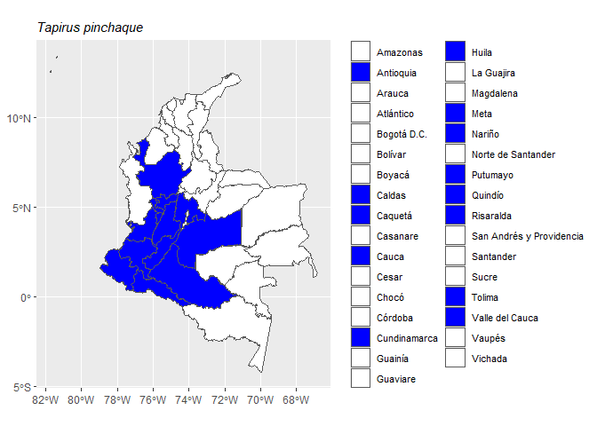

The goal of mammalcol is to allow easy access to the List of Mammal Species of Colombia.
Installation
You can install the development version of mammalcol from GitHub with:
# install.packages("devtools")
devtools::install_github("dlizcano/mammalcol")Example
Search database
This is a basic example which shows you how to search mammal names in Colombia using a vector of mammal names.
# define a vector with species to search for
splist <- c("Tapirus bairdii", "Tapirus pinchaque", "Tapirus terrestris",
"Tapirus terrestris", "Pudu mephistophiles", "Tapirus bairdii")
# search in database
search_mammalcol(splist)
#> The following names are repeated in the 'splist': Tapirus bairdii, Tapirus terrestris
#> name_submitted kingdom phylum class order family
#> 1 Tapirus bairdii Animalia Chordata Mammalia Perissodactyla Tapiridae
#> 2 Tapirus pinchaque Animalia Chordata Mammalia Perissodactyla Tapiridae
#> 3 Tapirus terrestris Animalia Chordata Mammalia Perissodactyla Tapiridae
#> 4 Pudu mephistophiles Animalia Chordata Mammalia Artiodactyla Cervidae
#> genus specificEpithet taxonRank scientificNameAuthorship
#> 1 Tapirus bairdii Especie (Gill, 1865)
#> 2 Tapirus pinchaque Especie (Roulin, 1829)
#> 3 Tapirus terrestris Especie (Linnaeus, 1758)
#> 4 Pudu mephistophiles Especie (de Winton, 1896)
#> taxonRemarks
#> 1 Elevación (m): 0-1000
#> 2 Elevación (m): 1400-4000
#> 3 Elevación (m): 0-2400
#> 4 Elevación (m): 3000-3500
#> bibliographicCitation
#> 1 HERSHKOVITZ P. 1954. Mammals of northern Colombia. Preliminary report No. 7: Tapirs (genus Tapirus), with a systematic review of American species. Proceedings of the United States National Museum 103:465-496.
#> 2 ARIAS-ALZATE A, CC DOWNER, C DELGADO-V y J SÁNCHEZ-LONDOÑO. 2010. Un registro de tapir de montaña (Tapirus pinchaque) en el norte de la Cordillera Occidental de Colombia. Mastozoología Neotropical 17:111-116.
#> 3 ARIAS-ALZATE A, JA PALACIO VIEIRA y J MUÑOZ-DURAN. 2009. Nuevos registros de distribución y oferta de hábitat de la danta colombiana (Tapirus terrestris colombianus) en las tierras bajas del norte de la Cordillera Central (Colombia). Mastozoología Neotropical 16:19-25.
#> 4 ALBERICO M, A CADENA, JI HERNÁNDEZ-CAMACHO y Y MUÑOZ-SABA. 2000b. Mamíferos (Synapsida: Theria) de Colombia. Biota Colombiana 1:43-75.
#> inMDD Col_redlist
#> 1 1 EN A2cd+ B1ab (i,ii,iii)+ B2ab (i, ii, iii)
#> 2 1 EN A4cd
#> 3 1 VU A4cd
#> 4 1 EN A2cd B1ab (i; ii; iii; iv; v) \r\n
#> distribution
#> 1 Antioquia | Chocó | Córdoba
#> 2 Antioquia | Cauca | Cundinamarca | Huila | Meta | Nariño | Quindío | Risaralda | Tolima | Valle del Cauca | Caldas | Caquetá | Putumayo
#> 3 Antioquia | Amazonas | Arauca | Caquetá | Cauca | Cesar | Córdoba | Guainia | La Guajira | Meta | Magdalena | Vaupés | Vichada | Guaviare | Casanare | Norte de Santander | Putumayo
#> 4 Cauca | Huila | Nariño | Risaralda | Quindío | Tolima | Valle del Cauca
#> source endemic
#> 1 Proceedings of the United States National Museum 103:465-496 No
#> 2 Mastozoología Neotropical 17:111-116 No
#> 3 Mastozoología Neotropical 16:19-25 No
#> 4 Biota Colombiana 1:43-75 No
#> english_name Distance
#> 1 Central American Tapir 12
#> 2 Mountain Tapir 14
#> 3 Lowland Tapir 16
#> 4 Northern Pudu 17Search database whith typos
mammalcol has the ability to identify and correct minor typos and lower case in the genus. Correcting potential typos or variations in species names through fuzzy matching is a crucial aspect of data management. This technique ensures precise retrieval by adeptly identifying and accommodating minor differences in input names, thus enhancing the reliability of analyses conducted on diverse, inconsistent, and ensemble datasets.
# vector with species names and intentional typos
splist <- c("Tapiru terrestre", "pudu mephistophiles", "tapirus bairdii")
# search in database
search_mammalcol(splist)
#> name_submitted kingdom phylum class order family
#> 1 Tapiru terrestre Animalia Chordata Mammalia Perissodactyla Tapiridae
#> 2 Pudu mephistophiles Animalia Chordata Mammalia Artiodactyla Cervidae
#> 3 Tapirus bairdii Animalia Chordata Mammalia Perissodactyla Tapiridae
#> genus specificEpithet taxonRank scientificNameAuthorship
#> 1 Tapirus terrestris Especie (Linnaeus, 1758)
#> 2 Pudu mephistophiles Especie (de Winton, 1896)
#> 3 Tapirus bairdii Especie (Gill, 1865)
#> taxonRemarks
#> 1 Elevación (m): 0-2400
#> 2 Elevación (m): 3000-3500
#> 3 Elevación (m): 0-1000
#> bibliographicCitation
#> 1 ARIAS-ALZATE A, JA PALACIO VIEIRA y J MUÑOZ-DURAN. 2009. Nuevos registros de distribución y oferta de hábitat de la danta colombiana (Tapirus terrestris colombianus) en las tierras bajas del norte de la Cordillera Central (Colombia). Mastozoología Neotropical 16:19-25.
#> 2 ALBERICO M, A CADENA, JI HERNÁNDEZ-CAMACHO y Y MUÑOZ-SABA. 2000b. Mamíferos (Synapsida: Theria) de Colombia. Biota Colombiana 1:43-75.
#> 3 HERSHKOVITZ P. 1954. Mammals of northern Colombia. Preliminary report No. 7: Tapirs (genus Tapirus), with a systematic review of American species. Proceedings of the United States National Museum 103:465-496.
#> inMDD Col_redlist
#> 1 1 VU A4cd
#> 2 1 EN A2cd B1ab (i; ii; iii; iv; v) \r\n
#> 3 1 EN A2cd+ B1ab (i,ii,iii)+ B2ab (i, ii, iii)
#> distribution
#> 1 Antioquia | Amazonas | Arauca | Caquetá | Cauca | Cesar | Córdoba | Guainia | La Guajira | Meta | Magdalena | Vaupés | Vichada | Guaviare | Casanare | Norte de Santander | Putumayo
#> 2 Cauca | Huila | Nariño | Risaralda | Quindío | Tolima | Valle del Cauca
#> 3 Antioquia | Chocó | Córdoba
#> source endemic
#> 1 Mastozoología Neotropical 16:19-25 No
#> 2 Biota Colombiana 1:43-75 No
#> 3 Proceedings of the United States National Museum 103:465-496 No
#> english_name Distance
#> 1 Lowland Tapir 15
#> 2 Northern Pudu 17
#> 3 Central American Tapir 12Produce a map
The function mammalmap produces basic a map of distribution at the “Departamento” level for a single species.
# write a species name in the function to map it
mammalmap("Tapirus pinchaque")
See the full taxon table
head(taxon)
#> scientificName kingdom phylum class order family
#> 1 Passalites murelia Animalia Chordata Mammalia Artiodactyla Cervidae
#> 2 Mazama rufina Animalia Chordata Mammalia Artiodactyla Cervidae
#> 3 Passalites sanctaemartae Animalia Chordata Mammalia Artiodactyla Cervidae
#> 4 Mazama temama Animalia Chordata Mammalia Artiodactyla Cervidae
#> 5 Mazama zamora Animalia Chordata Mammalia Artiodactyla Cervidae
#> 6 Mazama zetta Animalia Chordata Mammalia Artiodactyla Cervidae
#> genus specificEpithet taxonRank scientificNameAuthorship
#> 1 Passalites murelia Especie J. A. Allen, 1915
#> 2 Mazama rufina Especie (Pucheran, 1851)
#> 3 Passalites sanctaemartae Especie (J. A. Allen, 1915)
#> 4 Mazama temama Especie (Kerr, 1792)
#> 5 Mazama zamora Especie J. A. Allen, 1915
#> 6 Mazama zetta Especie Thomas, 1913
#> taxonRemarks
#> 1 Elevación (m): 0-900
#> 2 Elevación (m): 1500-4000
#> 3 Elevación (m): 0-900
#> 4 Elevación (m): 0-68
#> 5 Elevación (m): 600-1200
#> 6 Elevación (m): 1600-1950
#> bibliographicCitation
#> 1 ALLEN JA. 1916. List of mammals collected in Colombia by the American Museum of Natural History expeditions, 1910-1915. Bulletin of the American Museum of Natural History 35:191-238.
#> 2 ALBERICO M, A CADENA, JI HERNÁNDEZ-CAMACHO y Y MUÑOZ-SABA. 2000b. Mamíferos (Synapsida: Theria) de Colombia. Biota Colombiana 1:43-75.
#> 3 ALLEN JA. 1916. List of mammals collected in Colombia by the American Museum of Natural History expeditions, 1910-1915. Bulletin of the American Museum of Natural History 35:191-238.
#> 4 GROVES C y P GRUBB. 1987. Relationships of living deer. Pp. 21-59, en: Biology and management of the Cervidae (CM Wemmer, ed.). Smithsonian Institution Press, Washington, D.C., USA.
#> 5 ALLEN JA. 1916. List of mammals collected in Colombia by the American Museum of Natural History expeditions, 1910-1915. Bulletin of the American Museum of Natural History 35:191-238.
#> 6 ALLEN JA. 1916. List of mammals collected in Colombia by the American Museum of Natural History expeditions, 1910-1915. Bulletin of the American Museum of Natural History 35:191-238.
#> inMDD Col_redlist
#> 1 0 <NA>
#> 2 1 VU A2 cde\r\n
#> 3 0 <NA>
#> 4 1 DD
#> 5 0 DD
#> 6 0 DD
#> distribution
#> 1 Amazonas | Caquetá | Cauca | Meta | Vaupés | Vichada | Nariño | Putumayo | Cundinamarca
#> 2 Antioquia | Boyacá | Caldas | Cauca | Cesar | Cundinamarca | Huila | Nariño | Norte de Santander | Quindío | Risaralda | Santander | Tolima | Valle del Cauca | Caquetá
#> 3 Bolívar | Cesar | La Guajira | Magdalena | Atlántico | Córdoba | Cundinamarca
#> 4 Chocó | Magdalena
#> 5 Amazonas | Caquetá | Meta | Putumayo | Vichada
#> 6 Antioquia | Caldas | Cauca | Nariño | Valle del Cauca | Tolima
#> source
#> 1 Bulletin of the American Museum of Natural History 35:191-238
#> 2 Biota Colombiana 1:43-75
#> 3 Bulletin of the American Museum of Natural History 35:191-238
#> 4 Pp. 21-59, en: Biology and management of the Cervidae (CM Wemmer, ed.). Smithsonian Institution Press, Washington, D.C., USA
#> 5 Bulletin of the American Museum of Natural History 35:191-238
#> 6 Bulletin of the American Museum of Natural History 35:191-238
#> endemic english_name
#> 1 No <NA>
#> 2 No Little Red Brocket
#> 3 No <NA>
#> 4 No Mexican Red Brocket
#> 5 No <NA>
#> 6 No <NA>Sugested citation
citation("mammalcol")
#> Warning in citation("mammalcol"): could not determine year for 'mammalcol' from
#> package DESCRIPTION file
#> To cite package 'mammalcol' in publications use:
#>
#> Lizcano D (????). _mammalcol: What the Package Does (One Line, Title
#> Case)_. R package version 0.0.0.9000,
#> https://dlizcano.github.io/MammalCol/,
#> <https://github.com/dlizcano/MamalCol>.
#>
#> A BibTeX entry for LaTeX users is
#>
#> @Manual{,
#> title = {mammalcol: What the Package Does (One Line, Title Case)},
#> author = {Diego J. Lizcano},
#> note = {R package version 0.0.0.9000, https://dlizcano.github.io/MammalCol/},
#> url = {https://github.com/dlizcano/MamalCol},
#> }